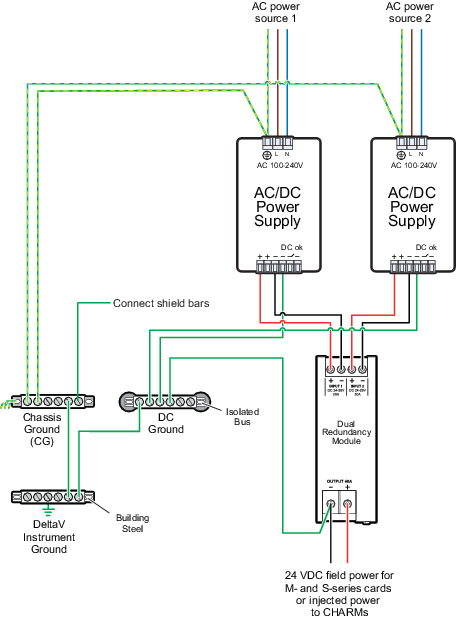
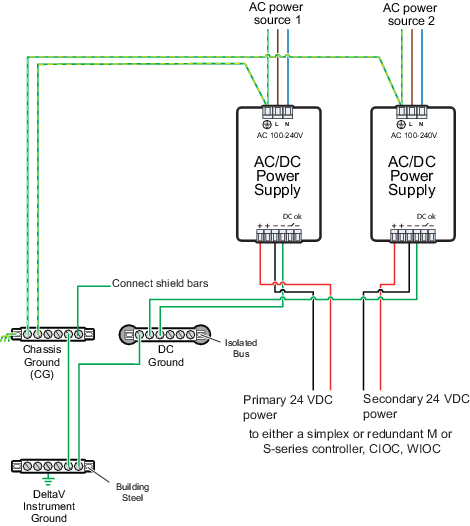
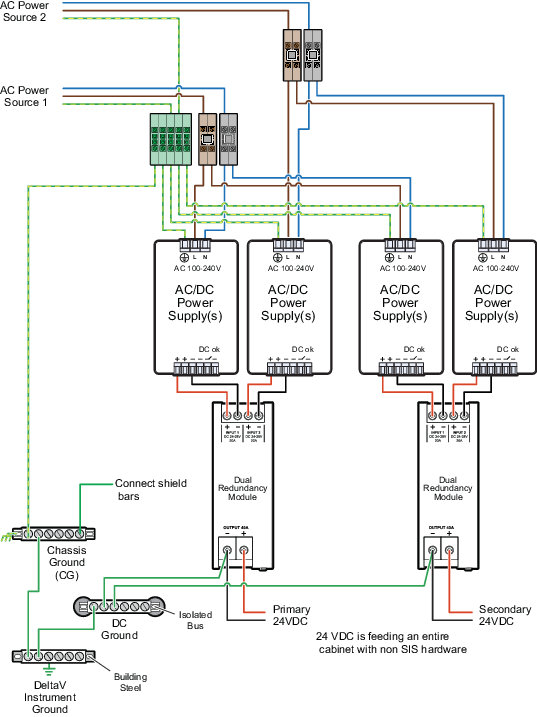

Using multiple DeltaV bulk power supplies for redundancy and load sharing in non safety applications
The DeltaV Bulk Power Supplies can be used in non safety applications that require load sharing and redundancy. Redundancy can be achieved by using an n+ power scheme where n+ refers to using one more power supply than is required for continual steady state operation. N+ redundancy schemes are typically used for high integrity field power applications.

Another type of redundancy requires powering one system power supply from one bulk power supply and the redundant system power supply from another bulk power supply as shown in the following image.

The highest integrity power scheme combines two bulk power supplies through a redundancy module to power one system power supply and a second pair of redundant bulk power supplies with a redundancy module to power a redundant system power supply.
